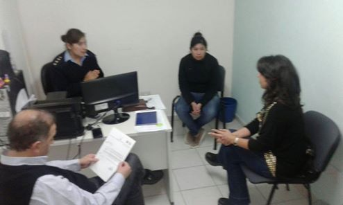

Real Chubut - Agencia de Noticias


Se creará la Comisión Especial de Género y Equidad

Durara 24 meses y sera para atender la prevención y erradicacion de la violencia
La diputada del PJ FpV, Cecilia Torres Otarola presentará en la sesión del martes un proyecto de Resolución para crear la Comisión Especial de Género y Equidad que tendrá una duración de 24 meses para atender la prevención, sanción y erradicación de la violencia contra las mujeres, en el avance de mecanismos que permitan atender el crecimiento de casos de femicidios como asi también en los temas vinculados con la igualdad de oportunidades de las mujeres y la defensa de sus derechos.
La misión de la Comisión será asesorar, entender, recomendar y brindar los aportes necesarios para la reglamentación o modificación de las leyes que hagan a la materia de manera integral y participativa. Sobre las funciones será la de constituirse en espacio de consulta y participación activa de la sociedad civil, realizar reuniones de trabajo con especialistas y asesores en la temática de género que se consideren necesarios para la aplicación de las normas de protección además de velar por la transversalidad de la perspectiva de género en la realización de normas correspondientes a la temática, y las que se establezcan en el seno de la misma.
La Comisión estará conformada respetando en forma proporcional la participación de todos los partidos políticos que posean representantes en la Cámara de Diputados. Además tendrá un equipo técnico – administrativo "Ad Honorem" integrado por referentes de organizaciones de la sociedad civil y ámbitos académicos que cuenten con una reconocida trayectoria en la lucha por la defensa de los derechos de las mujeres.
En los fundamentos, la legisladora cordillerense sostiene que el incremento de casos de violencia de género y femicidios en el ámbito provincial y nacional se ha incrementado de manera considerable, tan es así que en Argentina en los últimos 5 años "murieron 1369 mujeres y que a partir de este número se estima que un femicidio ocurre cada 35 horas".
Garantías
Indicó que la creación de la Comisión de Género y Equidad ha sido punta de lanza en los países de Latinoamérica y en provincias de nuestro país para impulsar reformas en temas como violencia, salud y participación política, y para que los Gobiernos de turno, adopten políticas públicas con perspectiva de género que promuevan la igualdad de oportunidades entre ciudadanos.
Otarola sostuvo que con este proyecto se apunta a seguir promoviendo y garantizando los derechos adquiridos de la mujer, “existen antecedentes en provincias como Jujuy y Córdoba, el Parlasur donde la comisión es uno de los bastiones de unión de Latinoamérica en materia de derechos humanos, los concejos deliberantes de nuestro país han reconocido la necesidad de contar con una comisión, por ende es necesaria su creación en el ámbito legislativo provincial para generar un espacio de debate específico que pueda tratar las distintas temáticas de género, impulsar proyectos al respecto y generar la organización de actividades tendientes a promover tareas de investigación y capacitación, como impulsar de este poder del estado definiciones políticas sobre la violencia de género para trabajar en profundidad desde esta Comisión”.
Comisaría de la Mujer
En tanto, la diputada estuvo la semana pasada dialogando con las encargadas de la Comisaria de la Mujer Zona Norte de la ciudad de Comodoro Rivadavia, acompañada del intendente de la ciudad Carlos Linares, la Jefa de la Dependencia Elizabeth Diaz dijo que la Comisaría es una de las primeras instituciones que mantiene contacto permanente con las víctimas que padecen de manera directa o indirecta la violencia de género.
Otarola explicó que la Comisaria de la Mujer necesita contar con una estructura edilicia propia y acorde para que al momento de recibir la denuncia la misma se desarrolle con la privacidad y contención necesaria.
PUBLICIDAD